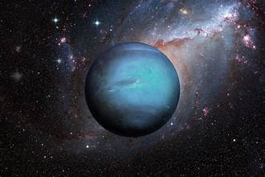

Neptune is the eighth, and most distant planet from the Sun. It’s the fourth-largest, and the first planet discovered with math.More than 30 times as far from the Sun as Earth, Neptune is not visible to the naked eye. The planet’s blue color comes from methane in its atmosphere, which absorbs red wavelengths of light, but allows blue ones to be reflected back into space – very much like its neighbor, Uranus. Neptune was the first planet located using math. German astronomer Johann Galle was the first to observe the planet in 1846. The planet is named after the Roman god of the sea.Neptune orbits our Sun, a star, and is the eighth planet from the Sun at a distance of about 2.8 billion miles (4.5 billion kilometers).
